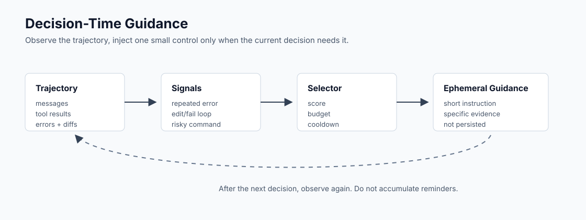

Pattern 01
Decision-Time Guidance
Static prompts turn every reminder into a tax on every decision. This pattern classifies the current trajectory and injects a temporary guidance card only when a known failure shape appears.
- Detects repeated errors, edit loops, unsafe commands, and fake-data escape.
- Uses scores, card budgets, cooldowns, and evidence payloads.
- Inspired by Replit's decision-time guidance engineering post.
